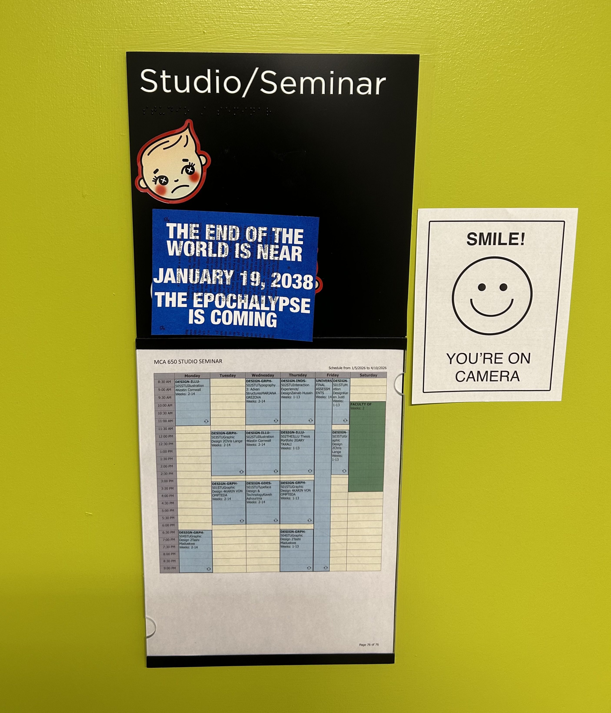

540
550
560
570
580
590
600
610
620
630
640
650
660
670
680
690
700
710
720
730
740
750
760
770
780
790
800
810
820
830
840
850
860
870
880
890
900
910
920
930
940
950
960
970
980
990
1000
1010
1020
1030
1040
1050
1060
1070
1080
1090
1100
1110
1120
1130
1140
1150
1160
1170
1180
1190
1200
1210
1220
1230
1240
1250
1260
1270
1280
1290
1300
1310
1320
1330
1340
1350
1360
1370
1380
1390
1400
1410
1420
1430
1440
1450
1460
1470
1480
1490
1500
1510
1520
1530
1540
1550
1560
1570
1580
1590
1600
1610
1620
1630
1640
1650
1660
1670
1680
1690
1700
1710
1720
1730
1740
1750
1760
1770
1780
1790
1800
1810
1820
1830
1840
1850
1860
1870
1880
1890
1900
1910
1920
1930
1940
1950
1960
1970
1980
1990
01.2000
02.2000
03.2000
04.2000
05.2000
06.2000
07.2000
08.2000
09.2000
10.2000
11.2000
12.2000
2001
2010
2020
01.2026
02.2026
03.2026
04.2026
05.2026
2030

Plague of Justinian (541–549): the first episode of the first plague pandemic.
Sack of Rome (546)
The Sacking of Lindisfarne (793): The first viking raid.
East–West Schism (1054): separation of the Catholic Church and the Eastern Orthodox Church.
SN 1054 The Crab Supernova (07.04.1054): the first recorded supernova.
Edict of Expulsion (1290): Royal decree expelling all Jews from the Kingdom of England.
Siege of Acre (1291): the fall of the last crusader states.
Black Plague (1346 – 1353)
Shakespeare's Sonnet 123 is published (1609).
The first Africans were brought to the American continent as slaves (08.20.1619).
Russian Plague (02.1771) – Jupiter and Pluto conjunct in Capricorn.
The American Revolutionary War (1775-1783)
Declaration of Independence (07.04.1776)
Discovery of Uranus (03.13.1781)
The French Revolution (1789-1799)
The American Civil War (1861–1865)
Emancipation Proclamation (1863) – Granted freedom to Americans in slavery.
On the Phenomena of Historical Repetition: A Study of the Relation of Historical to Scientific Research by Benjamin W. Richardson is published (1877).
World War 1 (1914-1918)
Spanish Flu (1918-1920) – Jupiter & Pluto conjunct in Cancer.
19th Amendment (1920) – Women granted the right to vote.
The Discovery of Pluto (1930)
World War II (1939-1945)
HIV/AIDS Outbreak – Jupiter & Pluto conjunct in Libra (09.1981-11.1981)
Three airports in Sweden unable to create temporary passports due to computer bug (01.02.1999)
HUNDREDS OF TAXIS BREAK DOWN IN SINGAPORE, CAUSING DISASTROUS CRASHES (01.12.1999)
SWEDISH TAXI RIDERS CHARGED $7 MILLION DUE TO COMPUTER BUG (01.12.1999)
OSWEGO, ILLINOIS CHARGED A $7 MILLION ELECTRIC BILL DUE TO COMPUTER BUG (03.06.1999)
Date Switch in a Pennsylvania Nuclear Plant Causes Outages Across the State for 7 Days! (03.06.1999)
As many as 500 people got notices telling them to show up for jury duty in 1900 due to computer bug (11.28.1999)
20,000 Credit Card Machines Fail! (12.30.1999)
Y2K (01.01.2000) – THE ALMOST END OF THE WORLD
150 Delaware Lottery racino slot machines stop working (01.01.2000)
AIR TRAFFIC CONTROL SYSTEM IN JAPAN BREAKS! PROBLEM PERSISTS FOR DAYS (01.01.2000)
Bus ticket validation system in Australia fail to operate (01.01.2000)
JAPANESE NUCLEAR POWER PLANTS MALFUNCTION! DISASTROUS IMPLICATIONS!! (01.01.2000)
RAILTRACK WEBSITE REPORTS THAT NO TRAINS RUNNING IN THE UK DUE TO EPOCHALYPSE! (01.01.2000)
Reports of phone jamming in Brazil, Japan, Macedonia, Italy and the UK due to Y2K38 (01.01.2000)!
THE EPOCHALYPSE LEAVES CANADA’S DEFENCE OFFICE SAFE ROOMS LEFT VULNERABLE (01.01.2000)
Japan’s largest cellular operator reports newest text messages being deleted. CONTACT YOUR LOVED ONES BEFORE IT’S TOO LATE! (01.02.2000)
90,000+ APARTMENTS WITHOUT HEATING OR HOT WATER IN SEOUL FOR DAYS (01.02.2000)
THREE DIALYSIS MACHINES FAIL IN EGYPT (01.02.2000)
HUNDREDS OF TRAFFIC LIGHTS MALFUNCTION IN JAMAICA!!!!! (01.03.2000)
Video stores across New York charge $91,250 late fee! (01.03.2000)
Display bug at train station! (01.03.2000)
A newborn baby's age was recorded as 100 years old at a hospital near Seoul after the computer malfunctioned in the transition to 2000. (01.04.2000)
Bank accidentally transfers $6.2 million to a customer with a statement date of 30 December 1899 (01.04.2000)
Bureau of Alcohol, Tobacco, Firearms and Explosives unable to register new firearms dealers for several days! (01.04.2000)
Four hospital patients in the southeastern city of Taegu were issued medical fee receipts dated Jan. 1, 1900. (01.04.2000)
Thousands of taxi meters fail in Jiangsu, China. (01.04.2000)
THE EPOCHALYPSE DISABLES THE PENTAGON'S TERRORIST THREAT MONITORING SOFTWARE! (01.05.2000)
TRAINS GO ROGUE IN MALI AS TRAIN TRACKING SOFTWARE BREAKS DOWN!!! THOUSANDS OF PASSENGERS STRANDED FOR DAYS!!! (01.05.2000)
30,000 OF GREECE’S CASH REGISTERS HAVE BEGUN PRINTING RECEIPTS DATED 1900!! (01.06.2000)
Bank in Chicago unable to process electronic Medicare payments for months! (01.07.2000)
MasterCard and Visa report that thousands of customers are being charged multiple times for transactions! (01.07.2000)
THE FRENCH GOVERNMENT’S SECRET IS EXPOSED! THE EPOCHALYPSE CAUSES FRENCH SPY SATELLITES TO FALL OUT OF THE SKY!! (01.10.2000)
Y2K fix disrupts U.S. spy satellites for days, not hours (01.13.2000)
At a nuclear plant in Japan, computer systems that monitor employee work hours shut down!! (02.29.2000)
At Japan's Meteorological Agency, weather monitoring stations reported double-digit rainfall even though no rain fell outside (02.29.2000)
New Zealand government and banks report more than 4,000 failed transfers! (02.29.2000)
ELDERLY OVER 100 DENIED CARE IN BEDFORDSHIRE AFTER Y2K38 BUG STRIKES!! (04.24.2000)
GERMAN FAMILIES DENIED GOVERNMENT CHILDCARE! (06.07.2000)
105 year old woman offered a spot in a Norwegian kindergarten. (2000)
Glitches in Brazil’s Port of Santos and Viracopos International Airport causes massive delays in cargo shipments.(2000)
The year is 19100 according to the U.S Naval Observatory website! (2000)
An undiscovered bug led to 154 pregnant women to receive incorrect Down’s syndrome test results. (09.14.2001)
The birth of Samantha Lee. (12.23.2005)
AOLserver malfunctions 1 billion seconds before Y2K38 (05.12.2006 01:26:38UTC)
DENMARK HOSPITAL REPORTS A 100 YEAR OLD BABY! (06.01.2009)
GANGNAM STYLE PREDICTED THE END OF THE WORLD!!!!! (12.16.2014)
Will computers be wiped out on 19 January 2038? Outdated PC systems will not be able to cope with time and date, experts warn (12.16.2014)
Digital 'Epochalypse' Could Bring World to Grinding Halt (07.28.2017)
data poetry / datenpoesie by jörg piringer is published. (2018)

Mark Gill stacks cases of water at the Super Walmart off Charlotte Pike to have ready for folks concerned about Y2K38 in Nashville, Tenn. (03.08.2018)
BREATHALYZERS BREAK IN HONG KONG: DRUNK DRIVING INCIDENTS SPIKE (12.29.2019)
Prisoners in Venice and Naples have 100 years added to their sentences! (12.29.2019)
COVID-19 Pandemic (2020-2023)
The beginning of GRPH-3018-501 Graphic Design 4. (01.08.2026)
The assembly of The Eternal Return. (02.04.2026)

The Eternal Return is installed in the sixth floor open studio of OCAD University's main building. (02.05.2026)
y2k38.fail launches to the public.(02.28.2026)

Y2K38 posters spotted across OCAD University's main building (03.09.2026)

y2k38.fail site presented in room 650. (03.10.2026)
The Eternal Return is installed in room 664 in OCAD University's main building. (03.26.2026)
The end of GRPH-3018-501 Graphic Design 4. (04.14.2026)

A woman stocks up on supplies in Eugene, Ore. (12.28.2026)
Legendary Japanese fortune teller reports visions of planes falling out of the sky on January 19, 2038!! (03.03.2035)

Camera catches strange beam of light at the Louvre! Experts say this is a sign the Y2K38 Epochalypse has begun. (08.04.2037)

BREAKING NEWS! Beam of light strikes aircraft! SIMILAR STRANGE PHENOMENA REPORTED ACROSS THE GLOBE!!!!! (11.11.2037)
Jodi Didier looks over her Y2K storage area at her home using a wind-up flash light. Didier taught a course entitled, "How to Prepare for the Y2K" at Rock Valley College in Rockford, Ill and is now spreading awareness about Y2K38. (02.05.2037)

A compound in the back of the building at 5312 S Stone Rd. in South Range, Wis., built by families preparing for Y2K and maintained in anticipation for Y2K38. (09.24.2037)
A couple, Tom and Betty O'Connor, packing to move from Seattle to rural Utah before Y2K38. (04.20.2037)
People preparing for Y2K38, stocking up on essential items. (01.18.2038)
SATELLITES FALL FROM THE SKY! ALL EVIDENCE POINTS TO Y2K38! (01.19.2038)